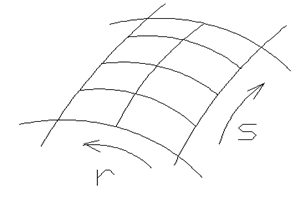
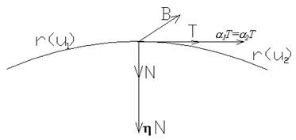

Поверхности произвольной формы, применяемые в авиа-, судо-, автомобилестроении и других областях невозможно описать, используя простые геометрические поверхности - цилиндр, сфера, конус и т.п. Возникает необходимость представления сложной поверхности из отдельных отсеков, которые стыкуются с заданным порядком гладкости. Для получения описания сложной поверхности реального объекта применима следующая процедура, обычно используемая для математического представления таких сложных поверхностей, которая состоит в следующем.
- Поверхность покрывается двумя воображаемыми группами линий в продольном и поперечном направлениях. Эта сетка линий определяет множество топологически прямоугольных ячеек, каждая из которых в случае гладкой поверхности, будет ограничена четырьмя гладкими кривыми (Рис.22).
- Координаты узлов этой воображаемой сетки измеряются на модели или на наборе чертежей поперечных сечений поверхности.
- С помощью интерполяции математически описываются эти две группы линий, образующих сетку.
- Каждая ячейка сетки имеет четыре корректно определенные границы, внутренность ячейки может быть “заполнена” с помощью двумерной интерполяции.

Рис. 22
Составные кривые, заданные параметрическими уравнениями
Рассмотрим конструирование составных кривых, параметрическое описание которых мы получили выше. Предположим, что нужно соединить сегмент:
r(1) (u1) 0≤u1≤1 (u1 - больше или равно нулю, но меньше или равно единице.)
r(2) (u2) 0≤u2≤1 (u2 - больше или равно нулю, но меньше или равно единице.)
Требуется, чтобы кривая была непрерывной в точке соединения и имела непрерывный наклон. Следовательно, r(1) (1) = r(2)(0) и
, где T - единичный вектор касательной, a1 и a2
скаляры, влияющие на полноту кривой.
Сложнее добиться непрерывности кривизны. Если в качестве параметра взять S - длину дуги, то кривизна h в любой точке кривой определяется:
,
где N - единичный вектор главной нормали, а именно линия, соединяющая данную точку с центром кривизны. Если центр кривизны движется непрерывно при переходе через точку соединения, то h и N должны быть непрерывны (Рис.23).

Рис. 23
Если T- единичный касательный вектор и N единичный вектор нормали непрерывны, то непрерывен и вектор бинормали B = T x N. И для него справедливо соотношение:
Уравнение удобно для анализа кривизны потому, что включает производные только по параметру кривой, а не по длине дуги S. Тогда, для непрерывности дуги в точке соединения необходимо:
Принимая во внимание выражение для T:
Это соотношение удовлетворяется при:
,
где m - произвольный скаляр. Однако наиболее часто m = 0.
Сегмент кривой в форме Фергюсона может быть записан через конечные точки и касательные в них (форма Эрмита ).
r (u) = r(0)(1-3u2+2u3)+r(1)(3u2- 2u3)+ r'(0)(u-2u2+u3)+ r'(1)(-u2+u3) 0 ≤ u ≤ 1
Фергюсон обращается к обычному подходу для получения непрерывности кривизны и подбирает r , r' , r" в точке соединения сегментов так, чтобы удовлетворялись условия a1= a2, а также r (1)(1)= r (2)(0). Используя уравнение Эрмита определяем первую производную в общем виде:
r' (u) = r(0)(-6u+6u2)+r(1)(6u- 6u2)+ r'(0)(1-4u+3u2)+ r'(1)(-2u+3u2)
Вторая производная будет иметь следующий вид:
r"(u) = r(0)(-6+12u) +r(1)(6 - 12u)+ r(0)(-4+6u) +r(1) (-2+6u)
Определим значение второй производной r"(u) для конца первого и начала второго сегмента, подставляя соответствующие значения параметра u.
r" (1)(1)=6r (1)(0)-6 r (1)(1) +2r' (1)(0) +4r' (1)(1)
r" (2)(0)= -6r (2)(0)+6 r (2)(1) -4r' (2)(0) -2r' (2)(1)
Последние полученные выражения упрощаются с учетом условий:
r (1)(1)= r (2)(0) и r' (1)(1)= r'(2)(0).
Можем записать.
6r (1)(0)+2 r' (1)(0) =6 r (2)(1) - 8r' (2)(0) -2r' (2)(1)
или, разделив коэффициенты на 2, получаем
3r (1)(0)+r' (1)(0) =3 r (2)(1) - 4r' (2)(0) - r' (2)(1).
В левую часть выражения перенесем члены, содержащие первые производные, в результате получаем следующее выражение:
r' (1)(0)+4r' (2)(0) +r' (2)(1) =3(r (2)(1) - r (1)(0))
Последнее выражение дает соотношение между касательными векторами в трех последовательных точках и значениями радиус-векторов для рассматриваемых нами сегментов.
Если переписать последнее соотношение для любых трех точек, получаем:
t i-1+4t i +t i+1 =3(r i+1 - r i-1 ),
где
i =1, 2, 3,...n-1
Последнее выражение есть рекуррентное соотношения между касательными в трех последовательных точках.
Если строится составная кривая Фергюсона, проходящая через точки r0 , r1 ... rn, которая имеет касательные t0 , t1 ... tn , то достаточно знать t0 и tn, чтобы получить систему уравнений, из которых все остальные касательные можно определить через положения точек кривой. Приписывание этих значений касательным обеспечит непрерывность кривизны составной кривой. Данный метод хорошо подходит для автоматического построения кривой по определенной последовательности точек при условии, что они расположены достаточно равномерно.
Сегмент кубической кривой Безье описывается выражением:
r (u)= (1 - u) 3r0+3u(1 - u) 2r1+3u2 (1 - u)r2+u3r3 0≤u≤1,
где r0 , r1 , r2 , r3 - вершины характеристического многоугольника, который аппроксимируется кривой.
Безье вводит меньше ограничений, чем Фергюсон при выборе условий непрерывности внутри сегмента. В то время, как в подходе Фергюсона используется прежде всего для аппроксимации кривыми заданного набора точек, подход Безье дает больше возможности непосредственно для конструирования кривых.

Рис. 24
Конструируется сегмент кривой r2(u2) (Рис.24), наклон и кривизна которого, должны быть непрерывны в точке соединения с существующим сегментом r 1(u1). Так как r (0)= r 0 и r (1)= r 3, то первое требование есть
r 3 (1) = r 0 (2)( * )
r (u)= -3(1 - u) 2 r0+3(1 - u) 2r1 - 6u(1 - u)r2+3u2r3
Так как
r ' (0) =3(r1 - r0) и r ' (1) =3(r3 - r2),
то для непрерывности угла наклона касательной требуется выполнение соотношения:
(**) ,
где a1 , a2 - суть длины касательных векторов.
В общем случае они имеют разное значение. Заметим , что если выполняются начальные условия , то три точки r2(1) , r3(1) = r0(2) , r1(2) должны быть коллинеарные. Далее находим:
r' (u)= -3 (1 - u) 2r0+(3(1 - u) 2+( -6 )u(1-u) )r1+(6u(1 - u)+( -3u2 ) )r2+3u2r3,
где 0≤u≤1
r "(u) =+6(1-u ) r0 +(-6(1 - u) +( -6 )(1-u)+6u )r1+(-6u +6(1 - u)-
- 6u)r2+6ur3=6(1-u ) r0 +(-12(1 - u) +6u )r1+(-12u +6(1 - u) )r2+6u r3.
Определим r"(u) для конца первого сегмента и начала второго.
r" (1)(1) =6u r1(1) -12 r2(1) +6 r3(1)=6( r1(1) - 2r2(1) + r3(1) )
r" (2)(0) = 6r0(2) -12 r1(2) +6 r2(2)=6( r0(2) - 2r1(2) + r2(2) )
Условие непрерывности кривизны в точке сопряжения , то есть непрерывность в этой точке величины hB = ( r' x r" ) / l r' l 3 , из предыдущих выводов можно записать:
r"(2)(0)= l2 r"(1) + m r1'(1)(1).
Тогда соотношения (*) и (**) дают
6 ( r0(2) - r1(2) + r2(2) ) = 6 l2 (r1(1) - 2r2(1) + r3(1) ) + 3 m (r3(1) - r2(1) )
Исключим r1'(2) и r0'(r) на основании начальных условий r0(2) = r3(1).
Получаем
тогда
6 r2(2) = 6 l2 (r1(1) - 2r2(1) + r3(1) ) + 3 m (r3(1) - r2(1) )-6 r0(2) +12r1(2)
или
r2(2) = l2 (r1(1) - 2r2(1) + r3(1) ) + 1/2 m (r3(1) - r2(1)) - r0(2) +2r1(2)
r2(2)=l2 r1(1)-2l2r2(1) +l2 r3(1)+1/2mr3(1) -1/2m r2(1) -r3(1)+2l r3(1) -2l r2(1)+
+2r3(1) =l2 r1(1)-(2l2 +2l-1/2m)r2(1) +( l2 +2l + 1+1/2m ) r3(1) .
Тем самым r2(2) определяется через r1(1) , r2(1) , r3(1) и выбранные величины l и m.
Вершины r0(2) и r1(2) уже определены условиями непрерывности и ее наклона и поэтому сохраняя непрерывность кривизны можно свободно выбирать лишь четвертую вершину r3(2) характеристической ломаной сегмента r(2)(u2).
Если вычесть r3(1) из обеих частей, то правая часть может быть выражена в виде комбинаций (r3(1) - r2(1)) и (r2(1) - r1(1)) . Из этого следует, что точка r2(2) должна быть компланарна с точками r1(1), r2(1), r3(1) = r0(2) и r1(2) .
Используя эти результаты можно построить составную кривую Безье , обеспечив непрерывность кривой , ее наклона и кривизны. Мы можем добавлять по одному сегменту, начав с одного конца. Для определения формы каждого нового сегмента выбираются лишь l , m и вершина r3. Так как r0 , r1 , r2 в непосредственно определяются через вершины предыдущего сегмента после выбора l и m .